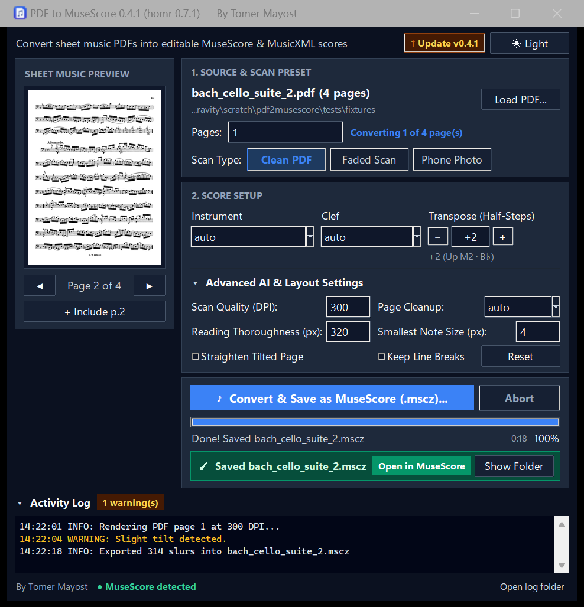

1
Load PDF & Pick Pages
Preview every page right inside the studio window (← / →) and click
Pick page or enter ranges like 2-3, 5 so you only convert the movements you need.
Convert printed PDFs, faded photocopies, and smartphone photos straight into .mscz and MusicXML files — running locally on your Windows PC with no account, no cloud uploads, and no page limits.

Converted directly on a regular laptop CPU from the public-domain Bach Cello Suite No. 2 (Prélude) scan into an editable MuseScore 4 score.
Built for musicians, students, and band directors — no command line or Java configuration.
Preview every page right inside the studio window (← / →) and click
Pick page or enter ranges like 2-3, 5 so you only convert the movements you need.
Select Clean PDF, Faded Scan, or Phone Photo,
then set Instrument, Clef, or Transpose (e.g. +2 for B♭ instruments).
Local AI recognizes the music, sanitizes slurs/tuplets/line breaks for MuseScore 4, and gives you a 1-click Open in MuseScore button.
Every knob is plain English, tooltipped with musical examples, and remembered between sessions.
Inspect multi-page PDFs visually before converting so you never waste time scanning title pages or extra movements.
Switch cleanly between Clean PDF, Faded Scan (contrast boost + deskew), and Phone Photo (shadow cleanup).
Shift parts by semitones with live interval hints like +2 (Up M2 · B♭), or override clef & playback instrument before export.
Automatically pairs unclosed slurs, fixes malformed tuplets/tremolos, removes forced line breaks, and sets score title from your saved filename.
Powered by open-source homr 0.7+ ONNX models running offline on your CPU — your unpublished arrangements never leave your PC.
Self-contained Windows installer with Light/Dark themes, safe Unicode folder handling, remembered settings, and optional GitHub update alerts.
No subscriptions, no page quotas, and no uploading private scores to a cloud account.
| Feature | PDF to MuseScore | MuseScore Online Import | Audiveris | Paid Scanners (PlayScore 2 / ScanScore / PhotoScore) |
|---|---|---|---|---|
| Price | 100% Free & Open Source | Free tier capped / Pro needed | Free & Open Source | Paid / Subscription |
| Account Required? | No | Yes (MuseScore.com) | No | Usually / License key |
| Privacy / Runs Offline | 100% Local on CPU | Uploads PDF to cloud | Local | Local or cloud |
| Page / Score Limits | Unlimited | Limited on free tier | Unlimited | Trial page caps |
| Windows Installation | 1-Click Installer (~105 MB) | Built into MuseScore | Requires Java runtime | Standard installer |
| Direct .mscz Output | Yes (plus .musicxml) | Yes | Exports MusicXML first | Exports MusicXML first |
| Pre-Export Transpose & Clef | Built-in | Edit after import | Edit after import | Varies |
Optical music recognition saves hours of note entry, though knowing where AI excels helps get clean results fast.
Quick answers on privacy, Windows SmartScreen verification, and requirements.
homr and RapidOCR ONNX model weights once during installation (or automatically on startup if missing), and a silent check against GitHub Releases for newer app versions (which sends zero user data and can be disabled via check_updates = false).
SHA256SUMS.txt and GitHub Build Provenance Attestations:
Get-FileHash .\pdf2musescore-setup.exe -Algorithm SHA256 gh attestation verify .\pdf2musescore-setup.exe --repo tomermayost/pdf2musescore
.mscz (and offers to install it or export pure .musicxml if MuseScore isn't detected).
homr and RapidOCR neural network weights (~180 MB) are downloaded once during installation (or automatically in the background when the app starts if missing, such as in offline installs or Microsoft Store builds) and cached locally for offline use afterward.
200), and ~500 MB of free disk space.